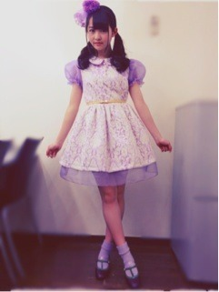

| 2013/03 01 Fri | 373回目*marika |
こんばんは

3月になりました。
昨日からぽかぽかしてきて嬉しくて
ナチュラルハイ

徹夜でナチュラルハイ
おういえーい
絶賛テスト勉強中！
友達とメールで教え合い
励まし合いながら勉強中。
やっぱりみなさん花粉症つらいね。
共感してくれて嬉しかった、
一緒だね。
今日は13日の金曜日の衣装を
紹介するよー
＼MV衣装／
シャツワンピ bulle de savon
羽織ってるカーディガン、靴下
CHILD WOMAN
私服！
みんな春先取りしてて
個性が出ててカラフルだよー
去年はシャーベットカラーの
ピンク、黄色、水色が流行ってたけど
今年はだいすきな黄緑がくるらしい！
高まるるるる
明るい色いっぱい着たいなー♪
女の子は今年の春服は買ったかな？
みんな何買ったの～？
私のこの服は撮影前に
何買うかメンバーにメールで
相談してたの。したらあすかに
「んじゃ、まりかは全身苔ね！」
って言われたんだよ。
(だから黄緑なんだよ！)←
こちらがライブ衣装。

ふわんふわんぼわんぼわん
頭から靴下まで紫。
乃木坂初の髪飾りじゃないか...？
カチューシャの飾りみんな違うの。
私はボンボンとチュールがついてる。
流れ星みたいでかわいい。
着るとキャピッとしたくなる衣装
以上！
君の名は希望の衣装も撮ったら
載せるねー
......
今日も隅っこで静かに生きる
苔たちを眺めながらの帰り道。
おれのいやし！
まりか
コメント(309)
2013/03/01 17:36